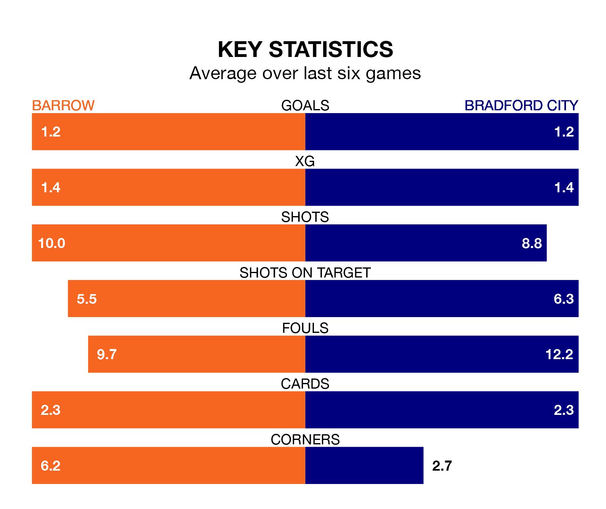

Two of EFL League Two's meanest defences go head-to-head at the SO Legal Stadium on Saturday, when Barrow host Bradford City.
Only three sides – Mansfield Town, Stockport County and AFC Wimbledon – have conceded fewer goals than Barrow to date: the home side have let in just 39 goals in 33 games.
The Bantams have conceded the same number of goals in 33 games, giving them the joint-fourth tightest back line so far this season.
Key to the Bluebirds' home form has been Paul Farman, who has allowed 1.16 goals past him per 90 minutes, compared to 1.23 for Harry Lewis in the opposite net.
In the last 10 years, Barrow and Bradford have played each other on seven occasions. Barrow won four of them, Bradford two, and they drew once.
On average, the Bluebirds scored 1.4 goals and the Bantams 1.1 in those matches.
Their last meeting was on November 11, when Barrow won 2-1 away.
Barrow are in bad form in EFL League Two, with one win and a draw from their last six games.
With three wins and two draws over that period, Bradford's form is much better – they have taken 11 points from 18, compared to the Bluebirds' four.
The hosts are sixth in the table after 33 games, of which they have won 14 and drawn 11, earning 53 points.
City are seven places behind Barrow in 13th, with 12 wins and 10 draws putting them on 46 points.
Barrow's last match was on February 17, a 5-3 loss against Salford City, with Cole Stockton (two) and Tyrell Warren getting the goals for the Bluebirds.
Bradford beat Sutton United 1-0 last time out, also on February 17, with Calum Kavanagh on the scoresheet.
Updated: 10:08 (UTC), 23/02/24